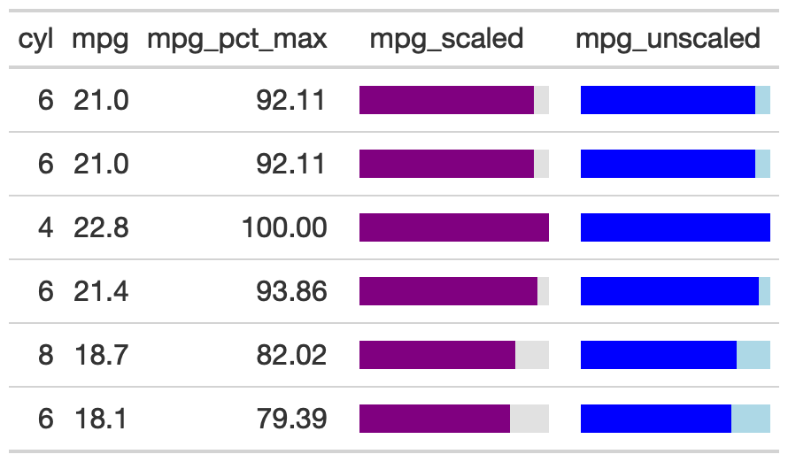

The gt_plt_bar function takes an existing gt_tbl object and
adds horizontal barplots via native HTML. This is a wrapper around raw HTML
strings, gt::text_transform() and gt::cols_align(). Note that values
default to being normalized to the percent of the maximum observed value
in the specified column. You can turn this off if the values already
represent a percentage value representing 0-100.
gt_plt_bar( gt_object, column, height = 16, fill = "purple", background = "#e1e1e1", scaled = FALSE )
| gt_object | An existing gt table object of class |
|---|---|
| column | The column wherein the bar plot should replace existing data. |
| height | A number representing the vertical height of the plot in pixels. Defaults to 16 px. |
| fill | A character representing the fill for the bar, defaults to purple. Accepts a named color (eg 'purple') or a hex color. |
| background | A character representing the background filling out the 100% mark of the bar, defaults to light grey. Accepts a named color (eg 'white') or a hex color. |
| scaled |
|
An object of class gt_tbl.

1-1
Other Plotting:
gt_kable_sparkline(),
gt_plt_bar_stack(),
gt_plt_winloss(),
gt_sparkline()
gt_bar_plot_tab <- mtcars %>% head() %>% dplyr::select(cyl, mpg) %>% dplyr::mutate(mpg_pct_max = round(mpg/max(mpg) * 100, digits = 2), mpg_scaled = mpg/max(mpg) * 100) %>% dplyr::mutate(mpg_unscaled = mpg) %>% gt() %>% gt_bar_plot(column = mpg_scaled, scaled = TRUE) %>% gt_bar_plot(column = mpg_unscaled, scaled = FALSE, fill = "blue", background = "lightblue") %>% cols_align("center", contains("scale")) %>% cols_width(4 ~ px(125), 5 ~ px(125))#> Error in gt_bar_plot(., column = mpg_unscaled, scaled = FALSE, fill = "blue", background = "lightblue"): could not find function "gt_bar_plot"